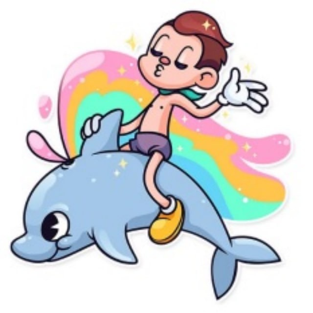

Каббалистическая сказка с прекрасным концом.
Опубликовано впервые на форуме2 Учения «левой линии» (нагвализма) в рамках локального конкурса «сказки о Силе»
Где-то на очень далекой планете с именем странным «Ялмез». Жила-тужила разумная раса водных рептилий, называющих себя «идул». Или «кеволечество»...
Был у идулей совет мудрецов. Он в глубоководье в дни важные для всех кеволечей. Но большинство идулей, как это обычно всегда бывает, не горели желанием решать судьбы мира, да и вообще - «меньше знаешь, крепче спишь». А спали идули крепко.
И вот поворотный момент наступил. Развивается новый духовный Путь. Мир Ума рушится на глазах, мир Веры никогда не будет использован молчаливым большинством.
Хозяева Ялмаза выступали от имени всех подводных разумных рептилий. Им оппонировала небольшая группа идулей, называющих себя Тулица. Они были убеждены, что в сложившихся обстоятельствах, только абсолютная Вера способна спасти остатки расы идулей от вымирания и прекращения рода Кеволечей. Хозяева подводного мира настаивали на строительстве «субмарин», т.е. на действии по обстоятельствам.
И был среди малочисленных Тулица один кеволеч, носивший кличку Нипна. Он был у них неформальным лидером. У него была напарница, с которой они были ближе, чем родственники. «Тулица очень скоро должны будут сделать выбор - каждый и каждая, равно как и все остальные идули, каждый кеволеч.»
«У него или у нее будет 2 варианта» - излагал Нипна подруге, которую звали Анибе, краткое положение дел. - «Тулица сделают ставку на слепую веру, все остальные идули - перебазируются глубже внутрь океана, ничего по сути не меняя. И этим выбором каждый определит свой Путь. Тем, кто пойдет по Пути Тулица, окажется с другими идулями не по Пути. Но выбор этот будет произведен не явным опросом, а как обычная ситуация подводного мира. Поэтому кеволеч не сможет выбирать сознательно, какому Пути следовать.»
Тут следует сделать одно пояснение. У Анибе был сын среди идулей, и он был серьезно и неизлечимо болен расстройством Ума. Поэтому к Тулица присоединиться не мог.
Нипна с лицом, напоминающим кирпич, поведал Анибе: «ты в проверке 'свой/чужой' выберешь Путь идулей из-за сына автоматически. И не сможешь идти дальше со мной и с Тулица. А если решишь выбрать Веру/'знание вопреки Вселенной', то за тобой не сможет пойти твой сын, и ты больше не сможешь помочь ему.»
А, тем временем, Нипна вооружил всех приверженцев Тулица необходимыми материалами и инструкциями, сам своим личным примером показал, как «простая вера» чудесным образом спасает от неминуемой гибели. Ему сложно было принять жестокую судьбу - что его самая ближняя в Тулице кеволеч остается «на том берегу».
Как вдруг, он «вспомнил» о том, что в основе верований Тулица лежало убеждение о двух «первородных» идулях, мужского и женского пола, которые были не совсем идулями, а, скорее, чем-то глобальным, (существующим) в единственном числе на всем Ялмезе. Их звали Мада и Аве. И Мада был, по сути, далек от всех прочих идулей, а близок к Абсолюту, из Которого он выплыл когда-то.
Аве же, его жена, вместе с ними проходила все невзгоды Пути, которых было не мало, поскольку Путь этот был длинным, и далеко не всегда Ума кеволечей, вообще говоря, хватало на то, чтобы что-либо в нем разобрать отчетливо кроме истрепанных кораллов под носом, худо-бедно служивших им домом. Но Цель этого Пути была очень возвышена и высока, и поднимала всех идулей как одного кеволеча на уровень Мада, при этом не убирая их нынешней формы, а совершенствуя ее.
Но пока эта Цель оставалась отдаленной мечтой (хоть и гораздо более близкой, чем когда-то, благодаря усилиям и удаче Нипна и Анибе, создавших движение Тулица буквально «из ничего»; разумеется, им в этом сильно помогал Сам Мада, и они это знали). Но все равно, море не выглядело даже отдаленно напоминающим чистые предвечные воды Абсолюта, а идули в массе своей и знать ничего про какую-то там «Высшую Цель» Кеволечества не хотели, ведя образ жизней, мало отличающийся от такового их ближайшего «эволюционного родственника» - дельфина кеволечеподобного.
Но «сверхзадача» Нипна и Анибе, а, соответственно, и Мада и Аве, поскольку именно Их задачи выполняли первые двое, было раскрытие реальности, полностью противоположной этому, и тут, что называется, морской конь не дрейфовал. И вот Нипна, размышляя над своим горем и судьбой Анибе, внезапно понял, что у Аве тоже есть единственный сын - это Кеволеч, включающий всех идулей, достигающий Цели своей долгой, и богатой на злоключения, эволюции и Пути.
И этот единственный Сын - очевидно, в настоящий момент, т.е., если верить глазам и эхо-локаторам (а кто в здравом Уме усомниться достоверности ощущений другого Кеволеча?), этот сын неизлечимо болен психически, ментально, и не способен, если бы Аве не помогала ему, скрывая свое участие в судьбе идулей по большей части, он бы не выжил, и не смог достичь Цели своего Пути, и порадовать этим Мада, своего Отца.
В следующий миг (скорость течения их судеб была настолько стремительной, что Нипна и Анибе давно принимали перевороты Океана вверх дном как будничное дело, и не удивлялись ничему) Нипна вспомнил свою собственную, не далее, чем вчерашнего дня, (формулировку) про то, как кеволечам правильно формировать намерение на достижение Цели Пути. Ему самому это действие удалось когда-то, результатом чего стало возникновение Тулица. Но сами идули, приверженцы Тулица, были всего лишь работниками, выполняющими работу Мада и Аве, а Цель этой работы, и ее смысл, касались не самих Тулица, а всех идулей, в их будущем состоянии достижения Цели Пути.
Из этого следовало, и Нипна в этот миг это кристально ясно эхо-лоцировал, то, что сами Тулица должны, вопреки своим локаторам, установкам, и его же собственным, не далее, чем вчерашним, инструкциям (поэтому он и не любил составлять планы и инструкции) - не следовать в гордом одиночестве Путем Веры, а «отменить себя», и этой же Верой дать себе знать, вопреки всем водам окияна, что именно идули, плавающие в прибрежных водах, и мало отличимые от дельфинов - совершенны исключительно во всем, но только в самих Тулица есть изъян, который мешает им стать частью имеющегося у всех идулей совершенства, чтобы вместе как один Кеволеч порадовать Мада и Аве достижением Цели Пути.
Это значит, что Нипна должен попросить у Мада об выправлении себя снова, только уже от Имени всех Тулица, и принять, вопреки всей очевидности океанских вод, то решение, которое есть у идулей, выше, чем собственное «особое мнение» приверженцев Тулица. И он действительно сделал это (ему это было не впервой, и прошло без заминок, так ему, во всяком случае, показалось). И Мада еще раз изменил Реальность Тулица, повернув их лицами в одну сторону с остальными идулями.
Они спаслись! Но, в новой Реальности, у самих Нипна и Анибе, было больше вопросов, чем ответов. Но в этом-то и была вся прелесть Пути в авангарде всех остальных идулей к Высшей Цели кеволечей, достигая Ее чуть-чуть раньше всех остальных, и имея поэтому этот непередаваемый миг восторга от раскрытия нового знания о состоянии, в котором все идули уже находятся, но которое именно Тулица в целом, и Нипна и Анибе, в частности, должны раскрыть и выяснить, для того, чтобы восполнить свою часть в этом (совершенстве) как полагается, и этим достичь Цели, порадовать Мада и Аве, и, вместе со всеми идулями, как одним Кеволечем, отплыть в неизвестное и невообразимое будущее в чистых и прозрачных водах первозданного Абсолютного Океана.
Мать, у которой сын болен шизой.
Но которая бросить его - ни за что.
И остается поэтому в первом внимании.
А в последний момент
Оказывается, что Госпожа, что со мной была рядом 2 года -
Ева, душа Первоматерь для «этого мира»,
«Погоняет ослов»1 за праведниками и праведницами.
Сын болен шизой - но «у него большое будущее»
духовное. Еще бы.
Бина Илаа. Теперь «исправлен» у нас будет весь «этот мир». Поэтому...
Сделаем и услышим!
Музыка под настроение: